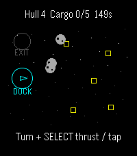
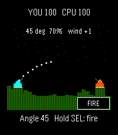
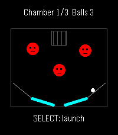
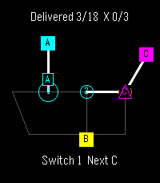
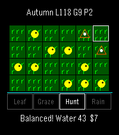
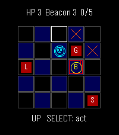

Luke Steuber · Version 0.1.0
Pocket Arcade
Six small games for Pebble Time 2 and Pebble Round 2. Each has buttons, touch, a pause menu, and a saved game to return to.
Download all six games, source, and evidenceOpen a PBW with the Pebble phone app to install it on your connected watch. Touch requires firmware 4.33.2 or later. These files passed native emulator checks on both watch shapes; physical-watch testing is still pending.





